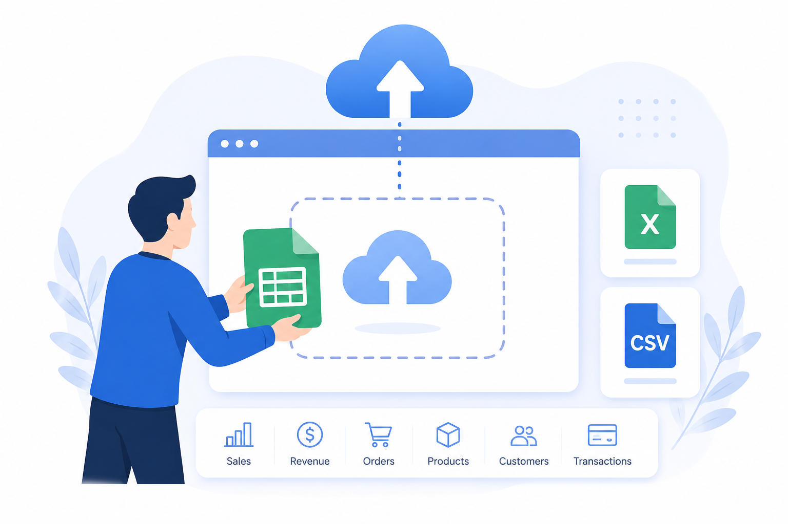
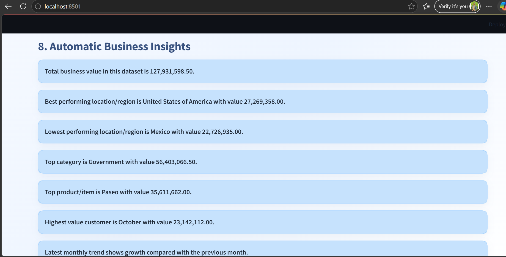

AI-Powered Business Intelligence Copilot for SMEs
Upload any sales dataset and instantly generate KPIs, dashboards, ML-based insights, business recommendations, and downloadable reports.
Replace localhost with your Streamlit Cloud link after deployment.

Project Overview
A practical analytics tool designed to help SMEs understand sales performance without needing advanced BI or data science skills.
This project combines business intelligence, machine learning and a rule-based copilot into one simple web application. Users can upload CSV or Excel data, map columns, explore dashboards, run ML models and export reports.
- Works with different sales datasets through flexible column mapping.
- Generates KPIs, trends, top products, top customers and regional insights.
- Includes forecasting, sales prediction, customer segmentation and anomaly detection.
Problem it solves
Small businesses often have sales data but no easy way to convert it into decisions. This app turns raw data into understandable dashboards and recommendations.
Portfolio value
The project demonstrates Python, Streamlit, data preprocessing, visualization, machine learning and product-style deployment skills.
Why this BI Copilot matters
It reduces manual analysis work and gives business users a guided way to understand what is happening in their sales data.
01 Flexible for different datasets
The app does not depend on one fixed column structure. Users can map sales, date, customer, region, product and category columns from the sidebar.
02 Combines BI and ML
Instead of only showing charts, the app also runs forecasting, prediction, clustering and anomaly detection models.
03 Generates readable business recommendations
The copilot and report module convert analysis results into simple business language that non-technical users can understand.


Core capabilities
The app is designed as an end-to-end analytics workflow from upload to decision support.
Features
Everything needed to move from raw sales data to practical business insights.
How It Works
A simple workflow for quick business analysis.

Upload Dataset
Upload a CSV or Excel file containing sales, revenue, orders, products, customers or transaction data.

Map & Analyze
Select the relevant columns from the sidebar and generate dashboards, charts and ML model outputs.
Ask & Export
Use the Business Copilot to ask questions and download a cleaned dataset or business report.
Ready to test the BI Copilot?
Open the Streamlit app, upload your sales dataset, map the columns and generate insights in minutes.
Machine Learning Modules
The app includes four applied ML components for business analytics.
Sales Forecasting
Linear Regression
- Monthly trend modeling
- Next 6 months forecast
- Future sales planning
Sales Prediction
Random Forest
- Feature importance
- MAE, RMSE and R²
- Predictive modeling
Customer Segments
K-Means
- High value customers
- Medium value customers
- Low value customers
Anomaly Detection
Isolation Forest
- Unusual sales records
- Outlier detection
- Risk review support
App Screenshots
Replace these sample visuals with your own Streamlit dashboard screenshots when final screenshots are ready.
- All
- Dashboard
- ML
- Report
{kind=link}
{kind=link}
{kind=link}

{kind=link}
{kind=link}
{kind=link}
Developer
Designed and developed as a portfolio-ready data science and BI project.

Rafiu Ali
Data Science, AI & Business Intelligence DeveloperBuilt with Python, Streamlit, Pandas, Plotly and Scikit-learn to demonstrate applied analytics, ML and business reporting skills.
Frequently Asked Questions
Common questions about the BI Copilot and how to use it.
What type of dataset does the app support?
The app supports CSV and Excel datasets. It works best with sales, revenue, orders, customers, products, categories, regions and date columns.
Does it work only with Superstore data?
No. The app uses flexible column mapping, so it can work with many sales or business datasets as long as there is at least one numeric value column.
Which ML models are used?
Linear Regression is used for forecasting, Random Forest for sales prediction, K-Means for customer segmentation and Isolation Forest for anomaly detection.
Can users download outputs?
Yes. Users can download the cleaned dataset as CSV and a text-based business report containing KPIs, insights and recommendations.
Project Links
Use these links to open the dashboard, view the repository and connect with the developer.
Streamlit App
Next deployment step
After the Streamlit app is deployed on Streamlit Cloud, replace every http://localhost:8501 link in this file with the public app URL.